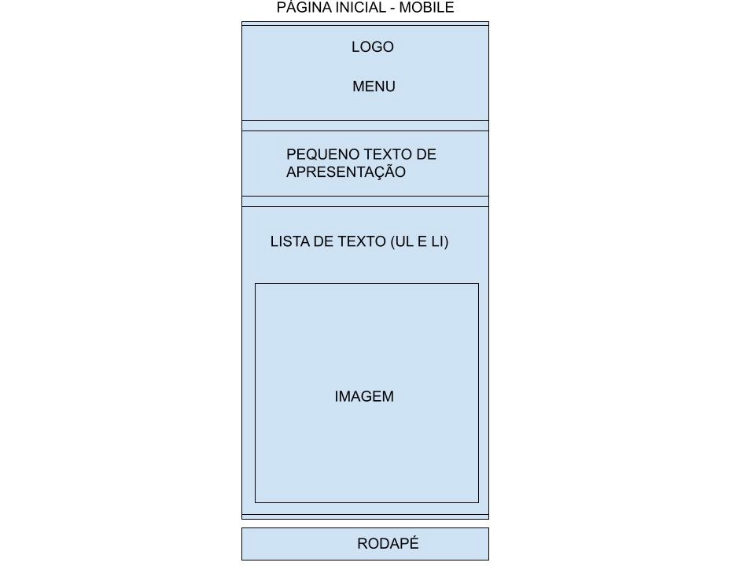
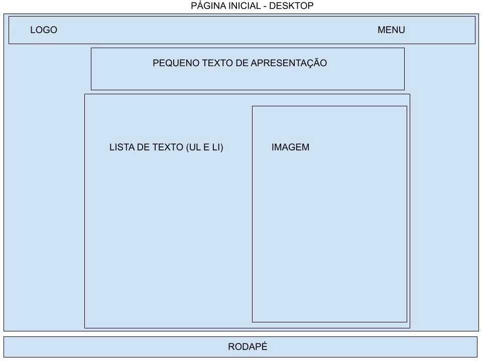

1. Nome do Site
Nome: SGINF - RPPS (Sistema de Gestão e Informações em RPPS) - www.sginfrpps.com.br
Motivo: O nome é uma abreviação direta e profissional. Ele transmite clareza e foca exatamente no nicho de atuação do software (gestão pública e previdenciária). Atualmente o domínio sginfrpps.com.br está disponível e já registrado para posterior utilização.
2. Finalidade do Site
O site atua como a vitrine comercial e institucional de uma plataforma inteligente de auditoria e Business Intelligence (BI) para regimes previdenciários municipais. O objetivo é apresentar as soluções do sistema, captar leads qualificadas de gestores públicos através de um formulário de demonstração e fornecer um calendário interativo de eventos e prazos essenciais para o acompanhamento das obrigações previdenciárias legais e envios ao TCE-PE.
3. Cenários (Público-Alvo)
Perguntas que os gestores de RPPS farão ao visitar o site:
- Como este sistema pode me ajudar a evitar multas e inconsistências com os anexos do TCE-PE?
- Onde posso acessar o calendário de eventos para não perder os prazos importantes de prestação de contas do RPPS?
- É possível ter uma visão unificada dos dados de servidores espalhados entre a Prefeitura, a Câmara e as Autarquias?
- Onde encontro uma forma de entrar em contato para agendar uma demonstração do software para o meu município?
4. Esquema de Cores
O site utiliza um esquema de design misto de alto contraste. O fundo principal é claro para garantir leveza e leitura confortável, enquanto as áreas de foco (como cartões e formulários) e o cabeçalho/rodapé utilizam tons profundos de azul para transmitir segurança e autoridade institucional.
- #e2e8f0 (Cinza Claro/Fundo Principal): Usado no background da página para dar respiro visual.
- rgb(3, 6, 94) (Azul Profundo): Usado no cabeçalho e rodapé do site.
- #02214a (Azul Marinho): Usado para os textos principais sobre o fundo claro e botões de ação.
- #020617 (Fundo Escuro): Usado como fundo escuro para os blocos de conteúdo e formulários, gerando foco.
- #06b6d4 (Ciano/Acento): Usado nos logotipos e elementos de destaque.
5. Tipografia
Fonte Principal: Arial, sans-serif
Uso: Aplicada no corpo (body) de todo o projeto do site e do planejamento. A fonte Arial é universal e garante excelente legibilidade, familiaridade para os usuários e um visual corporativo limpo, ideal para sistemas de gestão pública e previdenciária.
6. Wireframe
Abaixo estão os esboços estruturais da página inicial (Home) para dispositivos móveis e desktops.
Visualização Mobile

Visualização Desktop
